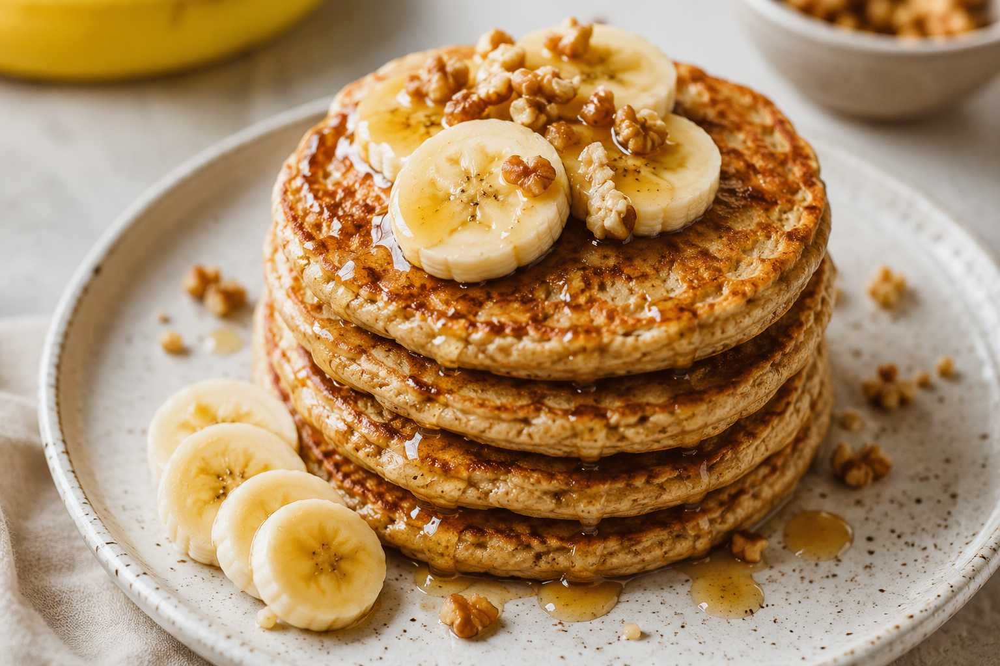

A simple healthy oat and banana pancake recipe for soft, fluffy pancakes packed with natural sweetness and perfect for a nourishing breakfast.
Blend all the ingredients in a blender until well combined.
Lightly oil a pan and heat over medium heat.
Working in batches, drop large spoonfuls of batter onto the hot pan; cook until bubbles
form and the edges look dry, about 2 minutes.
Flip and cook until browned on the other side.
Repeat with the remaining batter.